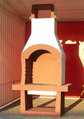
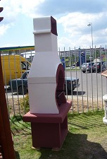

Приусадебный камин предназначен для приготовления жареных блюд из мяса, рыбы и других продуктов на открытом воздухе (приусадебный участок, дача).
Техническая характеристика
Камин изготовлен из керамзитобетона класса В7.5 (марка М100), который обеспечивает прочность конструкции и необходимую жаростойкость (800' C). Марка бетона по морозостойкости F25. Марка бетона по плотности D1100. Для отделки камина применены: Шпатлевка фасадная "Старатель" (Россия), краска фасадная "Muresko Plus" (Германия), декоративная шпатлевка "Kwartscoat" (Голландия).
Общий вес камина 300 кг .
Габаритные размеры 2150х1095х650.
Описание конструкции
Камин является сборной конструкцией, состоящей из 7 элементов, котрые монтируются по месту эксплуатации камина на подготовленном основании размером 1000х700. В комплект поставки входит решетка из специальной пищевой стали и ящик для сбора золы.
Руководство по эксплуатации
Для создания необходимой температуры при приготовлении продуктов на данном камине, используется древесный уголь,который укладывается на колосниковую решетку и разжигается. Для приготовления жареноого мяса (барбекю) или рыбы, в направляющие вставляется металлическая решетка, на которой раскладываются продукты для приготовления желаемых блюд. Для приготовления шашлыка в направляющие задвигается рамка, на которую укладываются заправленные шампура.
Применение древесного угля обеспечивает качественное приготовление пищи и отсутствие задымленности окружающего воздуха. После сгорания угля зола через колосниковую решетку пересыпается в металлический ящик.

Исправная работа камина гарантируется в течение двух лет со дня приобретения.